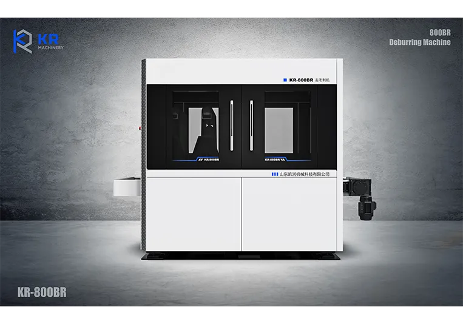
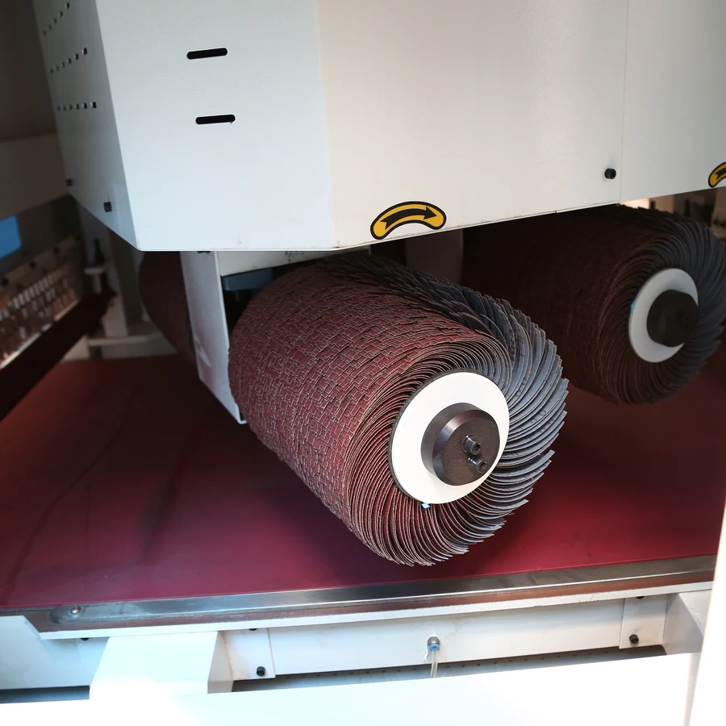
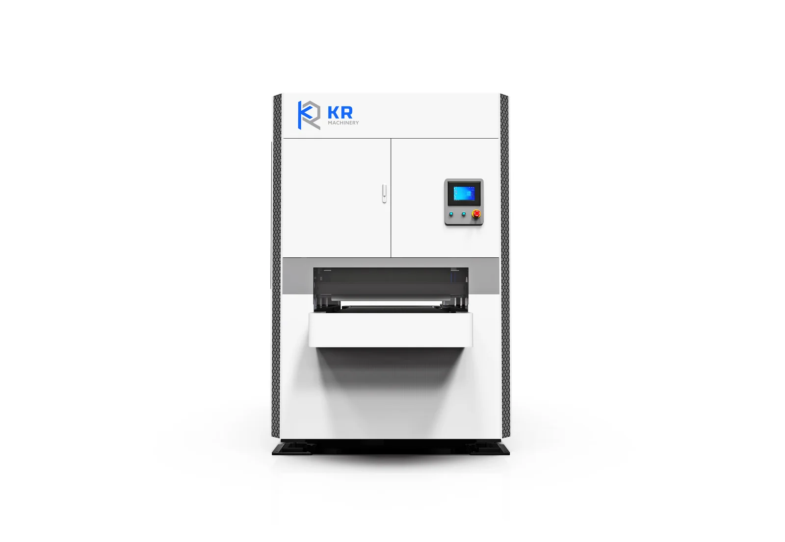

Brush rollers for chamfering, small burr removal and a beautiful hairline surface finish on stainless steel, aluminum and copper.

| Technical Parameter | Specification |
|---|---|
| Series type | R Series (rollers only) |
| Main function | Chamfering, small burr removal, beautiful surface |
| Applicable materials | Stainless steel, aluminum, copper |
| Compatibility | Medium & low power laser cutting machines |
| Standard configuration | Vac-sorb table, exhaust fan, dust collector |
Not every part needs heavy deburring — many stainless steel, aluminum and copper components just need a clean chamfer and a refined, decorative surface. The R series focuses exclusively on this: brush rollers gently chamfer edges and smooth the surface, delivering a uniform hairline finish that elevates the appearance and safety of the final product.
Brush rollers chamfer edges without gouging, ideal for cosmetic and precision parts.
Produces a consistent, attractive hairline surface that improves both looks and tactile feel.
Vac-sorb table, exhaust fan and dust collector keep the workspace clean during finishing.
The R series uses rollers only for chamfering and surface finishing. The BR series combines belts and rollers for full deburring plus chamfering.
Stainless steel, aluminum and copper — materials where a beautiful surface and chamfered edges matter.
It's matched to medium and low power laser cutting machines producing parts with lighter burrs.
No — for large burrs on thick steel, choose the BB series. The R series is designed for chamfering and fine finishing.
The R series focuses on a single principle: precision brush rollers deliver clean chamfers and a beautiful hairline surface — without belt abrasion.

Precision brush rollers chamfer edges and refine the surface in one gentle pass — ideal for stainless steel, aluminum and copper. The roller-only design avoids heavy material removal, keeping cosmetic surfaces pristine while delivering uniform R0.1–0.5 mm chamfers.

BR SERIESDual-function machine for combined deburring and chamfering on thin and thick metal with PLC control.
View BR Series BB SERIES
BB SERIES
Two belts remove big and small burrs from thick carbon steel cut by high-power laser or plasma machines.
View BB Series